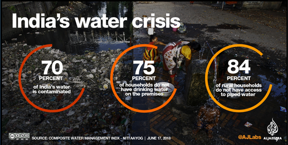
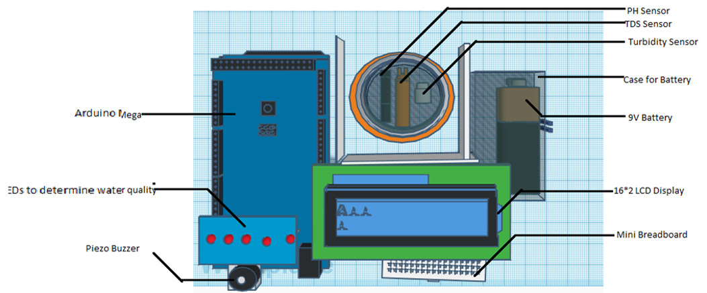

The Problem
The problem we seek is that many people drink contaminated water unknowingly. They are not able to check whether the water is suitable for drinking (pure or not) on their own at their homes in a very easy and economical way. This leads to people suffering from various kinds of diseases due to consumption of contaminated water like cholera, typhoid, diarrhoea, dysentery etc. Water testing labs are available to verify the water purity at the source. But such labs are in a limited number. Water should also be verified on the go at the distribution point (taps, showers, faucets etc.) for which a small device is needed.
Our Solution
We propose to create a Water Verification Machine, a small and a handy device that checks the Water purity at the distribution point (taps, showers, Faucets etc.) at individual houses.
Detailed Outputs
The machine will give detailed output as if the water is: Contaminated, Impure, Average, Consumable or the Cleanest.
Accurate Results
The machine will be made using the latest technology so, we can assure you about the accurate results.
Convenient to Use
The machine would be very easy and convenient to use because of its unique shape and size.
Economical
One of the important plus-points is that the machine would be economical so that it fits in the budget of the poor and middle-class families.
Implementation & Scope in India
A lot of people, especially in India, face diarrheal diseases, like Typhoid and Cholera, due to drinking contaminated water unknowingly. So, this project has great scope and can be easily implemented in India as it is in great need all over the nation.
Purpose
Were solving this problem for:
- The households in metropolitan cities and the cities known for bad water quality.
- The people who face diarrheal diseases so that they can verify the purity of the water they drink.